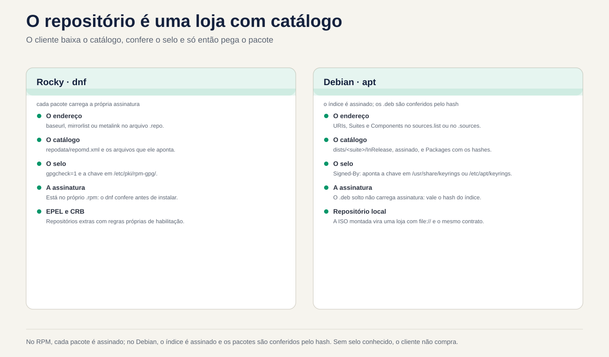
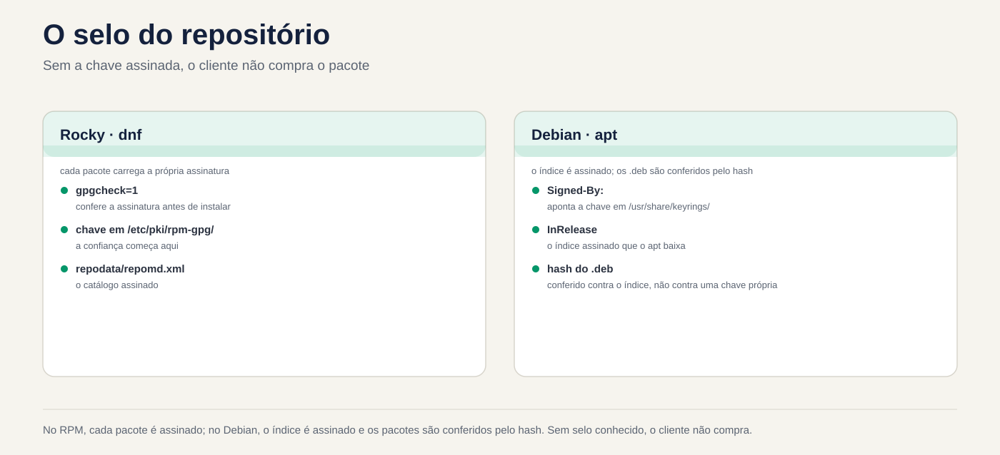

Lezione 6.3 · Repositories
Nelle due lezioni precedenti hai utilizzato apt e dnf come se i pacchetti cadessero dal cielo. Provengono da qualche parte: un indirizzo scritto in un file di configurazione, un indice firmato e una chiave di cui il sistema ha deciso di fidarsi. Oggi imparerai come leggere, aggiungere, disattivare e sistemare questa catena, e come impostare un repository dall'ISO da installare senza internet.
Chiave di questa lezione: leggere e scrivere un
.repo(Rocky) e un.sources(Debian), accendere e spegnere subito il repository, attivare EPEL nel modo giusto, capire dove si trova la firma e creare un repository locale con l'ISO. Il resto è approfondito.
| File | |
|---|---|
| Modulo | M6 · Software, lezione 3 di 5 |
| Quando | Settimana 10 |
| Alla fine | Sai da dove proviene ciascun pacchetto, di chi si fida il sistema e come installarlo con Internet disattivato |
| Articoli di prova | LPIC-1 102.4 e 102.5 (configurazione del repository). RHCSA: configurare l'accesso ai repository RPM |
| Prerequisiti | lezioni 6.1 e 6.2 |
| Ora | intorno alle 2:30 |
| Istantanee | m6a3-inicio e m6a3-fim, su entrambi i VM |
1 · Riscaldamento
Rispondere prima di leggere. Commettere errori qui fa parte del metodo.
- Scarichi un pacchetto da un mirror di cui nessuno è a conoscenza, dall'altra parte del mondo. Chi garantisce che sia l'originale?
- È possibile installare pacchetti su un server senza accesso a Internet?
- Un server Rocky ha cinque repository e uno di questi è andato offline. Il
dnf installdegli altri quattro funziona ancora?
2 · Perché è importante
| Il cosiddetto | La risposta sbagliata | Cosa provoca |
|---|---|---|
| "dnf ha smesso di funzionare, restituisce un errore nei metadati" | Cancellare il .repo che dava errore senza vedere di cosa si trattava | Aggiungi un repository del fornitore e i suoi aggiornamenti si interromperanno silenziosamente |
"Il tutorial ha ordinato di incollare un curl ... | apt-key add" | Collana | La chiave è ora valida per tutti i repository, non solo per |
| del fornitore "Ho bisogno di un colpo su Rocky, non credo" | Scarica il file .rpm da qualsiasi sito web | Pacchetto senza abbonamento noto e senza aggiornamento futuro |
| "Il client non consente al server di accedere a Internet" | "Quindi non puoi installare nulla" | Fornisce: repository locale con ISO o un mirror interno |
| "Errore chiave GPG" | gpgcheck=0 e basta | Disattiva esattamente la protezione contro i pacchetti manomessi |
3 · Modello mentale
Un repository è un negozio con un catalogo. Il cliente (apt o dnf) conserva un elenco di indirizzi di negozi e un portachiavi con i timbri che accetta. Prima di acquistare scarica il catalogo, controlla il sigillo e solo dopo ritira il pacco. Senza un sigillo conosciuto, non acquistare.
ROCKY (dnf) DEBIAN (apt)
/etc/yum.repos.d/*.repo /etc/apt/sources.list(.d/*.sources)
baseurl / mirrorlist / metalink URIs + Suites + Components
│ │
▼ ▼
repodata/repomd.xml (catálogo) dists/<suite>/InRelease (catálogo ASSINADO)
│ │ hashes
▼ ▼
pacote.rpm (cada pacote ASSINADO) Packages ──► pacote.deb (confere o hash)
│ │
gpgcheck=1 + gpgkey= Signed-By: chave em
/etc/pki/rpm-gpg/ /usr/share/keyrings ou /etc/apt/keyringsLa differenza più grande: nel mondo RPM, ogni confezione è firmata. In Debian, ciò che viene firmato è l'indice (InRelease/Release), mentre i .deb vengono controllati dall'hash che si trova in quell'indice. Il risultato è simile, ma un .deb sciolto scaricato non porta la propria firma.


4 · Gli elementi essenziali
Rocky: il file .repo
Ogni file /etc/yum.repos.d/*.repo è leggere (deve terminare con .repo). Ogni blocco [id] è un repository:
[iso-baseos]
name=Rocky ISO - BaseOS
baseurl=file:///mnt/iso/BaseOS
enabled=1
gpgcheck=1
gpgkey=file:///etc/pki/rpm-gpg/RPM-GPG-KEY-Rocky-9| Campo | Che cosa significa |
|---|---|
[id] | Nome breve, unico nell'intero sistema. È quello che usi in --enablerepo |
name | Descrizione per l'uomo |
baseurl | Indirizzo del repository diretto (http://, https://, file://). È necessario che ci sia repodata/ |
mirrorlist / metalink | Indirizzo di un elenco di mirror. dnf ne sceglie uno. metalink ha anche hash dal catalogo |
enabled | 1 acceso, 0 spento |
gpgcheck | 1 controlla la firma di ciascun pacco. Lascia 1 |
gpgkey | Dov'è la chiave pubblica. Alla prima installazione, dnf mostra l'impronta digitale e chiede |
skip_if_unavailable | Se il repository va giù, il dnf segue con gli altri (in Rocky il default è False) |
priority | Il numero più basso prevale quando lo stesso pacchetto esiste in due repository (default 99) |
Variabili che appaiono nei file: $releasever (9, 10), $basearch (x86_64). Vedere il valore con rpm -E %rhel e uname -m.
| Voglio... | Comando |
|---|---|
| Vedi tutto, anche offline | dnf repolist all |
| Dettagli di un | dnf repoinfo baseos |
| Connetti solo in questa esecuzione | dnf --enablerepo=crb install X |
| Usa solo alcuni | dnf --disablerepo='*' --enablerepo='iso-*' install X |
| Accendi / spegni definitivamente | sudo dnf config-manager --set-enabled crb / --set-disabled crb |
| Aggiungi tramite URL | sudo dnf config-manager --add-repo URL |
| Ripristina la cache dei metadati | sudo dnf makecache / sudo dnf clean all |
| Chiavi ritenute attendibili da RPM | rpm -qa 'gpg-pubkey*' |
| Importazione chiavi in mano | sudo rpm --import /caminho/ou/URL |
config-manager rientra in dnf-plugins-core. Se mancante, sudo dnf install dnf-plugins-core. Modifica solo enabled= del file, niente di magico.
Rocky: EPEL e CRB
EPEL (Extra Packages for Enterprise Linux) è il repository della comunità Fedora con migliaia di pacchetti che Red Hat non distribuisce: htop, ncdu, fail2ban... Molti dipendono dalle librerie di sviluppo che si trovano in CRB (CodeReady Builder), che è disattivato. Quindi l'ordine è:
sudo dnf config-manager --set-enabled crb
sudo dnf install epel-releasePacchetto epel-release installa .repo e la chiave. Nessun sito web a caso .rpm.
Debian: source.list e il formato deb822
Due modi, stesso effetto:
# Uma linha (sources.list clássico, Debian 12 e anteriores)
deb [signed-by=/usr/share/keyrings/debian-archive-keyring.gpg] http://deb.debian.org/debian bookworm main contrib# deb822 (/etc/apt/sources.list.d/*.sources, padrão no Debian 13)
Types: deb
URIs: http://deb.debian.org/debian
Suites: trixie trixie-updates
Components: main contrib non-free-firmware
Signed-By: /usr/share/keyrings/debian-archive-keyring.gpg| Campo | Cos'è |
|---|---|
Types | deb (binari) e/o deb-src (fonti) |
URIs | Indirizzo mirror |
Suites | Versione: trixie, trixie-updates, trixie-security, trixie-backports (o stable, che cambia versione da solo: evitare sui server) |
Components | main (gratuito), contrib, non-free, non-free-firmware |
Signed-By | Quale chiave può firmare questo repository |
Enabled: no | Si spegne senza cancellare (solo in deb822) |
In apt 3.0 (Debian 13), sudo apt modernize-sources converte il vecchio formato in deb822.
Chiavi di terze parti, nel modo giusto: la chiave del fornitore va a /etc/apt/keyrings/ (la tua cartella) e Signed-By: punta ad essa, solo in .sources di quel fornitore. apt-key è obsoleto ed è stato rimosso nelle nuove versioni: collocava la chiave in un portachiavi globale, valido per qualsiasi repository.
Backport: versioni più recenti di alcuni pacchetti, compilate per la tua Debian stabile. Entrano con priorità 100, quindi non vengono mai scelti da soli. Tu chiedi: sudo apt install -t trixie-backports pacote.
Repository locale con ISO
Il DVD ISO di Rocky è già un repository: al suo interno ci sono BaseOS/ e AppStream/, ciascuno con il suo repodata/. L'ISO minimo ne porta solo una parte. Assemblato, appuntito da baseurl a file:///..., pronto. Ecco come installarlo su una rete isolata, ed è la base dell'M6 Challenge.
In Debian, l'ISO ha anche l'indice firmato. Il percorso classico è apt-cdrom add con il disco montato, che aggiunge la voce stessa.
Rocky × Debian
| Oggetto | Rocky (dnf) | Debian (adatto) |
|---|---|---|
| Dove configurare | /etc/yum.repos.d/*.repo | /etc/apt/sources.list e /etc/apt/sources.list.d/*.sources oppure *.list |
| Cosa è firmato | Ogni .rpm | L'indice InRelease/Release |
| Dove sono le chiavi | /etc/pki/rpm-gpg/ e il banco giri (gpg-pubkey) | /usr/share/keyrings/ (pacchetti) e /etc/apt/keyrings/ (vostro) |
| Chiama solo adesso | --enablerepo= / --disablerepo= | -t suite (scegliere l'origine) |
| Spegni definitivamente | enabled=0 | Enabled: no o commentare la riga |
| Aggiornamento catalogo | automatico oppure dnf makecache | apt update, sempre |
| Pacchetti extra | EPEL (+ CRB) | contrib, non-free, backport |
| Niente internet | .repo con baseurl=file:/// | apt-cdrom add o URIs: file:/ |
| Chi ha la priorità | priority= | apt_preferences (blocco) |
In SUSE: zypper lr elenca e zypper ar URL nome aggiunge.
Cosa c'è nel test. In RHCSA, ricevono un URL e chiedono al sistema di utilizzare quel repository: scrivi .repo a mano, con [id], name, baseurl, enabled e gpgcheck/gpgkey che la dichiarazione indica, e verifica con dnf repolist. In LPIC-1, è necessario conoscere il formato della riga deb, a cosa servono /etc/apt/sources.list.d/ e /etc/yum.repos.d/, cos'è main/contrib/non-free e il comando dnf config-manager (ex yum-config-manager).
5 · Laboratorio guidato
Passaggio 0 · Istantanea e cartella. In Proxmox:
qm snapshot 201 m6a3-inicio
qm snapshot 202 m6a3-inicioIn entrambe le VM: mkdir -p ~/lab63 && cd ~/lab63.
Parte A · rocky-lab
Passaggio 1 · Anatomia. Guarda cosa esiste già prima di spostare:
dnf repolist all
ls /etc/yum.repos.d/
grep -v '^#' /etc/yum.repos.d/rocky.repo | grep -A8 '^\[baseos\]'
dnf repoinfo baseos | head -20
ls /etc/pki/rpm-gpg/
rpm -qa 'gpg-pubkey*'Nota: baseos utilizza mirrorlist, non baseurl. crb appare come disabled. Ogni gpg-pubkey-... è una chiave che RPM già accetta. Guarda chi è: rpm -qi $(rpm -qa 'gpg-pubkey*' | head -1) | grep -i summary.
Passaggio 2 · Accendi e spegni. Prima solo per un comando, poi ancora:
dnf --disablerepo='*' --enablerepo=baseos list --available | wc -l
dnf list --available | wc -l
sudo dnf config-manager --set-disabled appstream
grep -A6 '^\[appstream\]' /etc/yum.repos.d/rocky.repo | grep enabled
dnf repolist
sudo dnf config-manager --set-enabled appstreamIl primo numero è più piccolo: ha risposto solo BaseOS. config-manager ha appena sostituito enabled=1 con enabled=0 nel file. Avresti potuto farlo con un editor.
Passaggio 3 · CRB ed EPEL. Nel modo giusto e prestando attenzione alla chiave:
sudo dnf config-manager --set-enabled crb
sudo dnf install -y epel-release
cat /etc/yum.repos.d/epel.repo | grep -E '^\[|gpgkey|gpgcheck'
rpm -qa 'gpg-pubkey*' | wc -l
sudo dnf install htopNell'ultimo comando non usare -y. Il dnf mostrerà Importing GPG key con il nome e l'impronta digitale della chiave EPEL e chiederà. Leggere prima di rispondere y. Quindi:
rpm -qa 'gpg-pubkey*' | wc -l
dnf info htop | grep -i repoUn'altra chiave e l'htop proviene da epel.
Passaggio 4 · Repository locale con l'ISO. In Proxmox, trova l'ISO di Rocky e posizionalo sul CD-ROM della VM:
pvesm status --content iso
pvesm list <storage-de-iso> --content iso | grep -i rocky
qm set 201 --ide2 <storage-de-iso>:iso/<arquivo-da-rocky>.iso,media=cdromIn rocky-lab:
lsblk | grep rom
sudo mkdir -p /mnt/iso
sudo mount -o ro /dev/sr0 /mnt/iso
ls /mnt/iso
ls /mnt/iso/BaseOSBaseOS/ e AppStream/ devono apparire, ciascuno con repodata/. Ora .repo:
V=$(rpm -E %rhel)
sudo tee /etc/yum.repos.d/iso.repo >/dev/null <<EOF
[iso-baseos]
name=Rocky ISO - BaseOS
baseurl=file:///mnt/iso/BaseOS
enabled=1
gpgcheck=1
gpgkey=file:///etc/pki/rpm-gpg/RPM-GPG-KEY-Rocky-$V
[iso-appstream]
name=Rocky ISO - AppStream
baseurl=file:///mnt/iso/AppStream
enabled=1
gpgcheck=1
gpgkey=file:///etc/pki/rpm-gpg/RPM-GPG-KEY-Rocky-$V
EOF
cat /etc/yum.repos.d/iso.repo
dnf repolistProva utilizzando solo l'ISO, come se Internet non esistesse:
dnf --disablerepo='*' --enablerepo='iso-*' list --available | head
sudo dnf --disablerepo='*' --enablerepo='iso-*' install -y tmux
dnf info tmux | grep -i repoSe la tua ISO è la minima e tmux non è presente, scegli un altro pacchetto dall'elenco nel primo comando. From repo deve dire iso-baseos o iso-appstream.
Parte B · debian-lab
Passo 5 · Anatomia.
. /etc/os-release; echo $VERSION_CODENAME
cat /etc/apt/sources.list 2>/dev/null | grep -v '^#'
ls /etc/apt/sources.list.d/
cat /etc/apt/sources.list.d/*.sources 2>/dev/null
ls /usr/share/keyrings/ /etc/apt/keyrings/ 2>/dev/null
apt-cache policy | head -20In apt-cache policy, ciascuna fonte appare con un numero di priorità (500 per quelle normali) e la riga release mostra la suite (n=trixie) e il componente.
Passo 6 · Backport in deb822.
. /etc/os-release
sudo tee /etc/apt/sources.list.d/backports.sources >/dev/null <<EOF
Types: deb
URIs: http://deb.debian.org/debian
Suites: ${VERSION_CODENAME}-backports
Components: main
Signed-By: /usr/share/keyrings/debian-archive-keyring.gpg
EOF
sudo apt update
apt-cache policy | grep -B1 backportsNotice 100: i backport vengono consultati, ma non scadono mai da soli. Per vederlo nella pratica, cerca un pacchetto che abbia una nuova versione e confronta:
apt list -a 2>/dev/null | grep -- "-backports" | head -5
apt-cache policy <um-pacote-da-lista>Candidate: continua ad essere la versione normale. L'installazione dei backport richiederebbe -t ${VERSION_CODENAME}-backports. Non installare.
Passaggio 7 · Spegnere senza cancellare. Aggiungere Enabled: no al blocco e controllare:
echo 'Enabled: no' | sudo tee -a /etc/apt/sources.list.d/backports.sources
sudo apt update
apt-cache policy | grep -c backportsIl contatore va a zero.
Pulizia
Rocky: tieni EPEL e CRB (lo userai). Smontare l'ISO e disattivare il suo repository, in modo da non interrompere il dnf al prossimo avvio:
sudo dnf config-manager --set-disabled iso-baseos iso-appstream
sudo umount /mnt/isoDebian: backports.sources è disattivato. Sarà utile in seguito.
Decidi 1
È necessario ncdu su un server Rocky di produzione. Esiste solo in EPEL. L'installazione di epel-release ha dato un errore di chiave GPG a causa di un proxy che corrompe i download. Cosa fai?
A) Installa con gpgcheck=0 solo per questa volta, poi torna a 1. B) Risolvi il proxy, installa epel-release normalmente e lascia gpgcheck=1. C) Scarica ncdu.rpm da un sito di pacchetti e installa con rpm -i.
Seleziona prima un'opzione.
| Se hai selezionato | Risultato | Perché |
|---|---|---|
| A | Funziona e hai installato qualcosa che non sai se è l'originale | L'errore chiave è proprio l'avviso che il file è arrivato diversamente. Disattivare il controllo significa ignorare l'allarme |
| B | Giusto | Il problema è la procura. Risolto questo problema, l'abbonamento verrà verificato e riceverai anche i futuri aggiornamenti EPEL |
| C | Funziona oggi, marcisce domani | Senza repository non è disponibile alcun aggiornamento di sicurezza e l'origine è sconosciuta |
Per risolvere: l'errore di firma è un sintomo. Risolvere la causa, mai l'allarme.
Decidere 2
Viene eseguito un tutorial del fornitore, in Debian:
curl -fsSL https://fornecedor.example/key.gpg | sudo apt-key add -
echo "deb https://fornecedor.example/apt stable main" | sudo tee /etc/apt/sources.list.d/fornecedor.listA) Eseguito così com'è, il tutorial è del fornitore stesso. B) Salvare la chiave in /etc/apt/keyrings/fornecedor.gpg e utilizzare con essa Signed-By: solo nel .sources del fornitore. C) Salta la chiave e metti [trusted=yes] sulla riga.
Seleziona un'opzione prima.
| Se hai selezionato | Risultato | Perché |
|---|---|---|
| A | Potrebbe anche non funzionare (apt-key è scomparso dalle nuove versioni), e dove corre apre una porta | La chiave diventa affidabile per qualsiasi repository. Chiunque abbia questa chiave può firmare un falso "pacchetto Debian" |
| B | Giusto | La chiave è valida solo per quel repository. Questo è ciò che raccomanda oggi la stessa documentazione di Debian |
| C | Peggio ancora | trusted=yes disattiva il controllo di quel repository. Chiunque lungo il percorso può modificare i pacchetti |
Per correggere: una chiave, un repository. Se la chiave arriva in formato testo (ASCII armato), convertila con gpg --dearmor o salva come .asc.
6 · Interrompi e correggi
Interruzione 1 · Un repository rilascia l'intero dnf (rocky-lab)
Crea un repository con l'indirizzo sbagliato:


sudo tee /etc/yum.repos.d/quebrado.repo >/dev/null <<'EOF'
[quebrado]
name=Repo com URL errada
baseurl=https://repo.invalido.example/el9/
enabled=1
gpgcheck=1
EOF
sudo dnf makecacheSintomo: Failed to download metadata for repo 'quebrado' e il dnf si interrompe, anche per pacchetti provenienti da altri repository.
Diagnosi: il messaggio dice id. Trovare il file con grep -l '^\[quebrado\]' /etc/yum.repos.d/*.repo e testare l'indirizzo con curl -I <baseurl>/repodata/repomd.xml.
Fix, dal più rapido al definitivo:
- Per lavorare adesso:
sudo dnf --disablerepo=quebrado install X. - Se il repository si blocca di tanto in tanto e non è essenziale:
skip_if_unavailable=Truein quel blocco. - Se l'URL è sbagliato: correggere
baseurl. Se il repository non esiste più:enabled=0oppure rimuovi il file, dopo aver saputo a chi apparteneva.
In laboratorio rimuovi: sudo rm /etc/yum.repos.d/quebrado.repo.
Nella vita reale: è la classica chiamata dopo che un fornitore cambia indirizzo. Prima di eliminare, annotare ciò che il repository ha consegnato (dnf list --installed | grep @quebrado).
Interruzione 2 · Chiave errata in Signed-By (debian-lab)
Riattivare i backport e puntare Signed-By su un file che non esiste:
sudo sed -i '/^Enabled:/d; s|^Signed-By:.*|Signed-By: /etc/apt/keyrings/nao-existe.gpg|' /etc/apt/sources.list.d/backports.sources
sudo apt updateSintomo: apt update lamenta di non essere riuscito a verificare la firma di quel repository (errore GPG, NO_PUBKEY o di non essere riuscito a aprire la chiave) e ne ignora l'indice.
Diagnosi: il messaggio menziona l'URL e la suite. grep -r Signed-By /etc/apt/sources.list.d/ e ls -l nel file puntato.
Correzione: ritorna Signed-By in /usr/share/keyrings/debian-archive-keyring.gpg ed esegui sudo apt update. Poi spegnilo di nuovo con Enabled: no.
Nella vita reale: succede quando la chiave di un fornitore scade o viene cambiata. La soluzione è scaricare la nuova chiave attraverso il suo canale ufficiale, mai trusted=yes.
Pausa 3 · L'ISO è scomparsa dopo il riavvio (narrativa)
Hai lasciato acceso iso.repo, hai montato manualmente l'ISO e hai riavviato. mount non sopravvive all'avvio, quindi dnf cerca /mnt/iso/BaseOS/repodata e non trova: Failed to download metadata for repo 'iso-baseos' (a volte con Curl error (37)).
Correzione: o il repository è temporaneo (lasciare enabled=0 e utilizzare --enablerepo durante il montaggio), oppure è permanente e il montaggio va a /etc/fstab. La seconda opzione fa parte della M6 Challenge.
7 · Insidie
| Trappola | Cosa succede | Come evitare |
|---|---|---|
gpgcheck=0 "solo per testare" | Resta per sempre, nessuno si ricorda | Se ne hai proprio bisogno lascia un commento con data e motivo |
baseurl punta alla radice dell'ISO | Cannot download repomd.xml: la radice non ha repodata/ | Puntare su BaseOS/ e AppStream/, un blocco ciascuno |
File in yum.repos.d senza .repo alla fine | dnf ignora silenziosamente | ls /etc/yum.repos.d/ e dnf repolist dopo aver creato |
Due blocchi con lo stesso [id] | Uno sovrascrive l'altro o dà un avviso | id unico e descrittivo |
| EPEL senza CRB | Il pacchetto EPEL fallisce a causa di una dipendenza che "non esiste" | Attivare crb prima di |
.repo dalla versione 8 copiato nella 9 | Pacchetti di un'altra versione, dipendenze interrotte | Controllare $releasever e il percorso URL |
apt-key add o trusted=yes | Fiducia globale o nessuna | /etc/apt/keyrings/ + Signed-By |
Miscelare testing o sid su stabile | "FrankenDebian": un aggiornamento porta un mezzo nuovo sistema | Per una nuova versione di un pacchetto, utilizzare backports |
Stesso repository in due file con diversi Signed-By | Conflicting values set for option Signed-By e apt update per | Una voce per repository; grep -r l'URL prima di aggiungere |
Utilizzare stable invece del nome in codice | Quando viene rilasciata una nuova versione, apt upgrade diventa un aggiornamento della versione | Utilizza il nome in codice (trixie) |
8 · Quiz
Rispondi senza guardare. Il foglio delle risposte si trova alla fine della lezione.
- Qual è la differenza tra
baseurlemirrorlist? dnf installtermina conFailed to download metadata for repo 'fornecedor-x'. Cosa fare per installare adesso e quali sono le opzioni definitive?- Perché, in Rocky 9, l'installazione EPEL chiede di accendere prima il CRB?
- In Debian, cosa viene firmato: ogni
.debo l'indice? Che conseguenze ha questo per un.debsciolto? - Cosa fa il
Signed-By:che ilapt-key addnon ha fatto? - Un file in /etc/yum.repos.d/ viene letto da dnf solo se il suo nome termina con: a) .conf b) .repo c) .list d) .sources
9 · Cola
Da saperlo a memoria:
| Voglio... | Comando |
|---|---|
| Elenco repository (Rocky) | dnf repolist all |
| Usane solo alcuni adesso | dnf --disablerepo='*' --enablerepo=ID install X |
| Accendi / spegni definitivamente | sudo dnf config-manager --set-enabled ID / --set-disabled ID |
| EPEL | sudo dnf config-manager --set-enabled crb e sudo dnf install epel-release |
Campi minimi di un .repo | [id], name, baseurl, enabled, gpgcheck, gpgkey |
| Origini e priorità (Debian) | apt-cache policy |
Campi di un .sources | Types, URIs, Suites, Components, Signed-By |
| Chiave di terze parti (Debian) | /etc/apt/keyrings/nome.gpg + Signed-By |
Da consultare:
| Voglio... | Comando |
|---|---|
| Dettagli di un repository | dnf repoinfo ID |
| Aggiungi tramite URL | sudo dnf config-manager --add-repo URL |
| Ripristina cache | sudo dnf clean all && sudo dnf makecache |
| Chiavi accettate da giri/min | rpm -qa 'gpg-pubkey*' |
| Chiave di importazione | sudo rpm --import ARQUIVO_OU_URL |
| Montare l'ISO | sudo mount -o ro /dev/sr0 /mnt/iso |
| Modificare l'ISO della VM (Proxmox) | qm set VMID --ide2 STORAGE:iso/ARQ.iso,media=cdrom |
| Installa dai backport | sudo apt install -t CODINOME-backports X |
| Disattiva sorgente (deb822) | Enabled: no |
| Converti in deb822 | sudo apt modernize-sources (apt 3.0+) |
| Converti chiave di testo | gpg --dearmor < key.asc > key.gpg |
| CD/ISO su Debian | sudo apt-cdrom add |
| SUSE | zypper lr, zypper ar URL nome |
Flashcard:
- Dov'è la firma? → RPM: in ogni confezione. APT: nell'indice (InRelease).
--enablerepo×config-manager --set-enabled→ un singolo comando × scrive nel file.- I backport si installano da soli? → No. Priorità 100, solo con
-t. - Errore GPG → sintomo; correggere la causa, non disattivare mai il controllo.
- Repository ISO → un blocco per cartella (
BaseOS,AppStream),baseurl=file:///....
10 · Checklist e chiusura
- [ ] Leggo un
.repoe un.sourcese dico da dove provengono pacchetto - [ ] Accendo e spengo il repository solo per un comando e una volta alla ora
- [ ] Attivo EPEL con CRB e riconosco la domanda per importare la chiave
- [ ] Scrivo un
.repoda zero per l'ISO e lo installo usando solo esso - [ ] So perché
apt-keyetrusted=yessono una cattiva idea - [ ] Riparo un repository danneggiato senza eliminare ciecamente
Ultimo esercizio, senza guardare la lezione: in rocky-lab, monto di nuovo l'ISO, scrivo un nuovo .repo chiamato meu-iso.repo solo con AppStream e l'id meu-appstream e installa un pacchetto utilizzando solo esso. Quindi disattiva questo repository e smonta l'ISO.
Riavvia e conferenza:
# rocky-lab
sudo reboot
dnf repolist # nessun limite iso-*, limite epel e crb
sudo dnf makecache # nessun errore
# debian-lab
sudo apt update # nessun errore e nessun avviso GPGFine istantanea (su Proxmox):
qm snapshot 201 m6a3-fim
qm snapshot 202 m6a3-fim11 · Nella vita reale
Missione, sola lettura. Su un server Rocky/RHEL e un server Debian/Ubuntu che già amministri, esegui solo questo. Nessuna aggiunta, connessione o disconnessione del repository.
# RHEL-like
dnf repolist all
grep -H -E 'gpgcheck|skip_if_unavailable' /etc/yum.repos.d/*.repo
rpm -qa 'gpg-pubkey*' --qf '%{NAME}-%{VERSION} %{SUMMARY}\n'
# Debian-like
grep -rhv '^#' /etc/apt/sources.list /etc/apt/sources.list.d/ 2>/dev/null | grep .
grep -rn 'trusted=yes' /etc/apt/ 2>/dev/null
ls -l /etc/apt/keyrings/ /etc/apt/trusted.gpg.d/ 2>/dev/null
apt-cache policy | grep -E '^ *[0-9]+ ' | sort -uDomande a cui rispondere:
- Quanti repository di terze parti ci sono? Sai a cosa serve ciascuno?
- Qualcuno con
gpgcheck=0otrusted=yes? Da quando e perché? - Hai una chiave in
/etc/apt/trusted.gpg.d/(global trust, vecchio stile)? - Qualche Debian che punta a
stable,testingosidinvece del nome in codice? - Qualche repository di vecchia versione (el8 su una macchina 9, bullseye su un topo di biblioteca)?
Diario: imposta una tabella per server: repository, a cosa serve, chi lo ha richiesto, chiave utilizzata. È il tipo di documento che salva una migrazione.
Domani, senza guardare: scrivi dalla memoria un .repo con sei righe e un .sources con cinque.
12 · Scava più a fondo quando vuoi
createrepo_c: trasforma una cartella.rpmin un repository (generarepodata/). Insieme adnf download --resolveoreposync, così si configura il proprio repository o un mirror per una rete isolata.- Servire via HTTP: la stessa cartella, pubblicata con nginx o Apache, diventa il repository per tutte le VM della rete (
baseurl=http://...). - Mirror e cache aziendali:
apt-cacher-ngeaptlynel mondo Debian. Pulp, Foreman/Katello e Red Hat Satellite nel mondo RHEL. - Pinning (
/etc/apt/preferences.d/): controlla chi vince tra i repository conPin-Priority. Potente ed è facile commettere errori. repo_gpgcheck=1: oltre ai pacchetti, controlla la firma del catalogo stesso in Rocky.- ISO Debian come repository:
apt-cdrom addoURIs: file:/mnt/isoin.sources.
DeepTutor (http://10.1.0.149:3782, KB "Linux Sysadmin Course"):
!explica por que o Debian assina o índice e o RHEL assina cada pacote!feynman o que o Signed-By resolve que o apt-key não resolvia!quiz Aula 6.3, 5 perguntas sobre .repo, .sources e repositório local
Foglio risposte commentato
Riscaldamento
- La firma. Il mirror consegna solo file. È il tuo sistema che controlla, con la chiave pubblica della distribuzione che già possiede. A Rocky, ogni
.rpmè firmato. In Debian, l'indice è firmato e ha l'hash di ogni.deb. Un mirror dannoso non può firmare senza la chiave privata. - Sì. Con un repository locale: l'ISO montato (
baseurl=file:///...su Rocky,apt-cdromsu Debian) o un mirror interno sulla rete. - No, per impostazione predefinita. In Rocky,
skip_if_unavailableèFalse: un repository inattivo provoca l'arresto del dnf. Utilizza subito--disablerepo=IDoskip_if_unavailable=Truein quel blocco se è facoltativo.
Quiz
baseurlè l'indirizzo diretto di un repository.mirrorlist(ometalink) è l'indirizzo di una lista di mirror, e dnf ne sceglie uno.metalinkdispone anche di hash di catalogo, un controllo aggiuntivo.- Ora:
sudo dnf --disablerepo=fornecedor-x install X. Dopo: scopri perché si è bloccato (curl -Inell'URL). Se avete cambiato indirizzo, correggetebaseurl. Se è facoltativo e instabile,skip_if_unavailable=True. Se moriva,enabled=0, dopo aver saputo chi dipendeva da lui. - Perché diversi pacchetti EPEL dipendono da librerie e strumenti che Rocky distribuisce solo nel CRB, che è disconnesso. Senza di esso, l'installazione fallisce a causa di una dipendenza "inesistente".
- L'indice (
InRelease/Release). I.debvengono controllati dall'hash nell'indice firmato. Un.debsciolto, scaricato all'esterno di apt, non ha questa catena:dpkg -isi installa senza sapere se è originale. - Associa la chiave a un repository. Con
apt-key addla chiave è entrata nel portachiavi globale ed è diventata valida per qualsiasi origine, anche quando si firma un pacchetto Debian falso. - b) .repo.
.confè/etc/dnf/dnf.conf..liste.sourcesprovengono da apt.